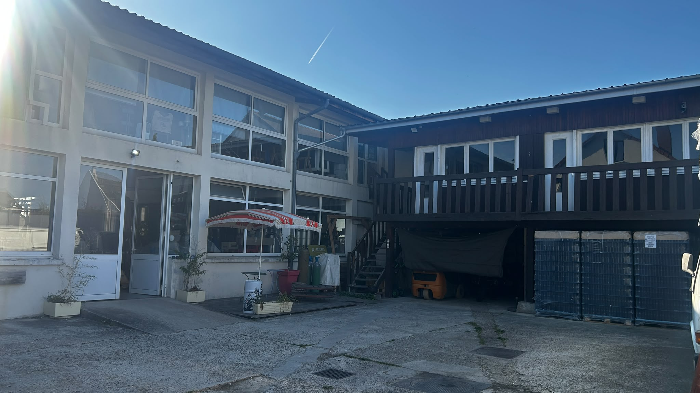
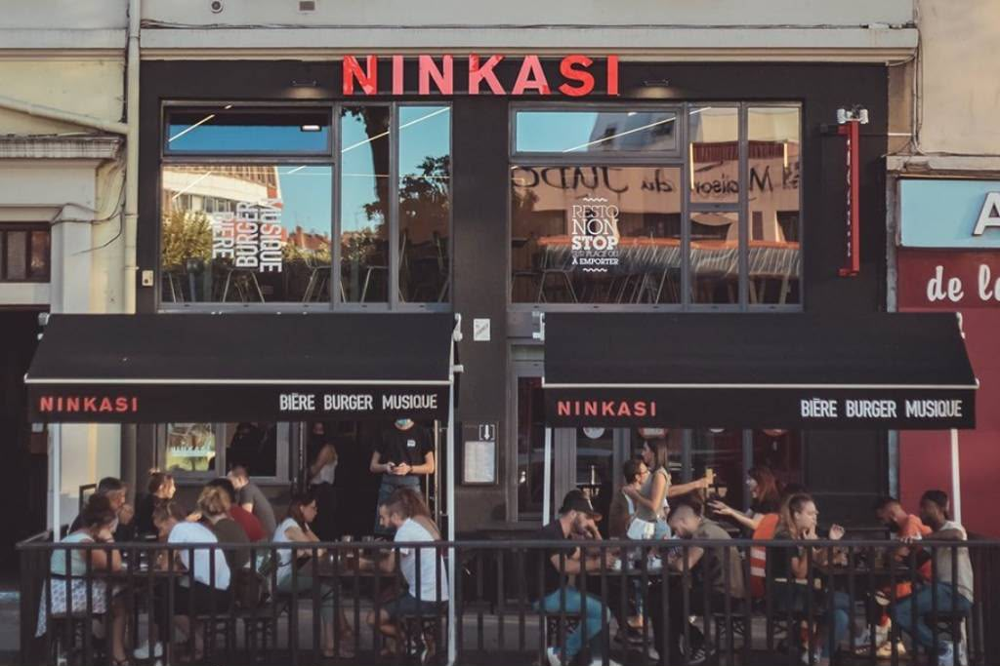
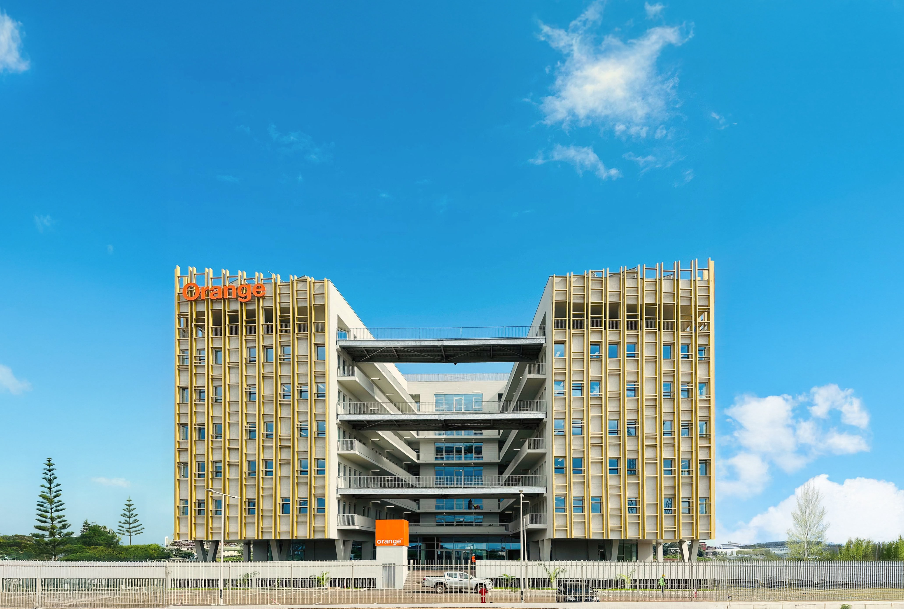
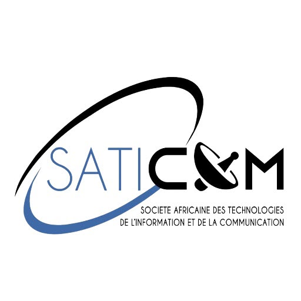
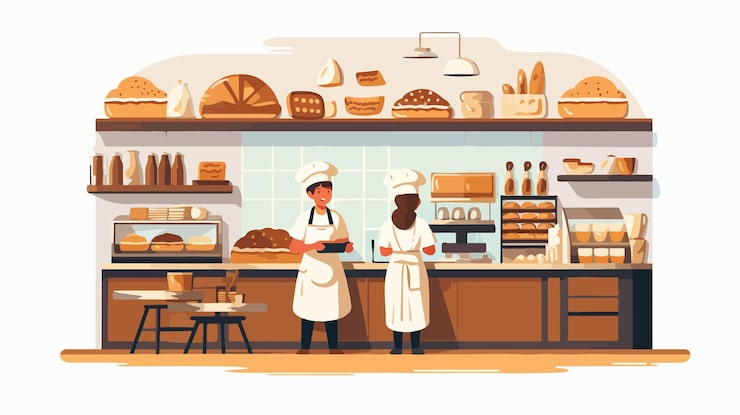

Un parcours professionnel entre deux continents, de la Guinée à la France, avec des expériences en gestion d'entreprise, contrôle de gestion, développement commercial et enseignement.
Expériences professionnelles et activités entrepreneuriales.

Ravensera (Artémus & 24 Terre)
Entreprise entrepreneuriale autour de deux marques complémentaires : Artémus (brasserie artisanale) et 24 Terre (torréfaction). Une immersion concrète dans l'entrepreneuriat qui nourrit mon ambition de créer mon propre cabinet de conseil.

Ninkasi Cordeliers — Lyon, France

Orange Guinée SA — Conakry
Leader des télécommunications en Guinée (65,9 % des parts de marché mobile, 13,5 millions d'abonnés). Une structure multinationale exigeante qui m'a appris la rigueur des grands groupes.
Conakry, Guinée

Saticom — Conakry, Guinée
Start-up guinéenne spécialisée dans les équipements informatiques. Voir une entreprise construite de zéro par un jeune entrepreneur m'a profondément inspiré.

Boulangerie — Conakry, Guinée
Une expérience terrain en dehors de mon domaine d'études, mais essentielle. Elle m'a appris à gérer des responsabilités concrètes dans un environnement à rythme soutenu.
Ravensera (Artémus & 24 Terre)
Entreprise entrepreneuriale autour de deux marques complémentaires : Artémus (brasserie artisanale) et 24 Terre (torréfaction). Une immersion concrète dans l'entrepreneuriat qui nourrit mon ambition de créer mon propre cabinet de conseil.
Ninkasi Cordeliers — Lyon, France
Orange Guinée SA — Conakry
Leader des télécommunications en Guinée (65,9 % des parts de marché mobile, 13,5 millions d'abonnés). Une structure multinationale exigeante qui m'a appris la rigueur des grands groupes.
Conakry, Guinée
Saticom — Conakry, Guinée
Start-up guinéenne spécialisée dans les équipements informatiques. Voir une entreprise construite de zéro par un jeune entrepreneur m'a profondément inspiré.
Boulangerie — Conakry, Guinée
Une expérience terrain en dehors de mon domaine d'études, mais essentielle. Elle m'a appris à gérer des responsabilités concrètes dans un environnement à rythme soutenu.
Engagements culturels, associatifs et pédagogiques.
Mission Baptiste de Guinée — Conakry
ONG américaine implantée en Guinée. Une mission rémunérée dans un cadre interculturel exigeant, auprès d'apprenants américains.
American Corner de Conakry — Guinée
Espace culturel rattaché à l'Ambassade des États-Unis. Après une année de formation en anglais, j'ai rejoint l'équipe en tant que bénévole.
Association étudiante — Guinée
Organisation engagée pour la protection de l'environnement, avec des actions reconnues et soutenues par l'ONU.
Club de lecture & débat — Guinée
Club intellectuel réunissant des jeunes autour de la lecture en plein air et du débat d'idées sur des thématiques sociales, politiques, psychologiques et économiques.
Mon ambition est claire et construite sur le long terme — de Conakry à Paris-Saclay, chaque expérience me rapproche de cet objectif.
Intégrer un Master en Management Stratégique ou en Contrôle de Gestion, pour approfondir ma capacité à piloter la performance d'une organisation.
Exercer en tant que consultant en gestion — combiner analyse, conseil et impact concret auprès d'entreprises variées.
Créer mon propre cabinet d'audit et de conseil en Guinée — contribuer au développement économique de mon pays d'origine.
DIYA signifie lumière en Malinke — le nom de mon projet de cabinet de conseil, d'audit et de contrôle de gestion en Guinée.
Trop d'entreprises africaines, notamment les PME et startups, prennent des décisions sans outils de pilotage fiables. DIYA Vision a vocation à combler ce manque — une expertise rigoureuse, adaptée aux réalités locales et accessible aux petites structures.
« Éclairer la décision, sécuriser la performance. »
Ce projet est encore en construction — chaque formation, chaque compétence acquise est une brique de plus. La première étape est le Master. Le cabinet, c'est l'horizon.
Disponible pour des opportunités professionnelles en gestion d'entreprise — disponible immédiatement.